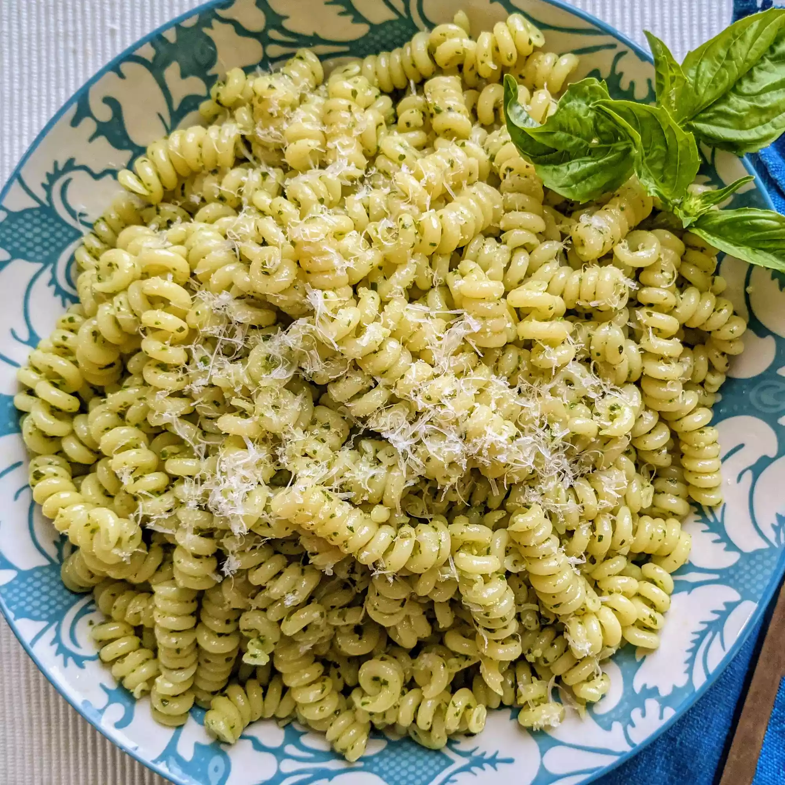

Description
Easy to make, but full of flavor! Good hot or cold. Anyone will love it even those who hate pasta.
Ingredients
- 1 (16 ounce) package pasta
- 2 tablespoons olive oil
- ½ cup chopped onion
- 2 ½ tablespoons pesto
- salt to taste
- ground black pepper to taste
- 2 tablespoons grated Parmesan cheese
Directions
-
Fill a large pot with lightly salted water and bring to a rolling boil.
Stir in pasta and return to a boil. Cook pasta uncovered, stirring occasionally,
until tender yet firm to the bite, about 8 to 10 minutes. Drain and transfer into a large bowl.
-
Meanwhile, heat oil in a frying pan over medium-low heat. Add onion; cook and
stir until softened, about 3 minutes. Stir in pesto, salt, and pepper until warmed through.
-
Add pesto mixture to hot pasta; stir in grated cheese and toss well to coat.
Go back to homepage
Back to top